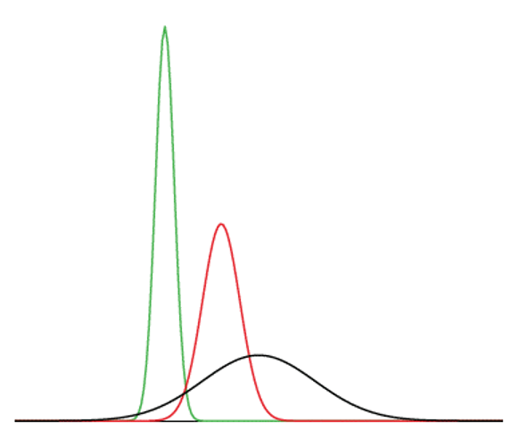

5 Probability Distributions
5.1 Various Types of Distributions1
5.1.1 Distributions of Qualitative or Discrete Variables
I recently purchased a bag of Plain M&M’s. The M&M’s were in six different colors. A quick count showed that there were 55 M&M’s: 17 brown, 18 red, 7 yellow, 7 green, 2 blue, and 4 orange. These counts are shown below in Table 5.1.
| Color | Frequency | |||
|---|---|---|---|---|
| Brown Red Yellow Green Blue Orange |
17 18 7 7 2 4 |
This table is called a frequency table and it describes the distribution of M&M color frequencies. Not surprisingly, this kind of distribution is called a frequency distribution. Often a frequency distribution is shown graphically as in Figure 5.1.
The distribution shown in Figure 5.1 concerns just my one bag of M&M’s. You might be wondering about the distribution of colors for all M&M’s. The manufacturer of M&M’s provides some information about this matter, but they do not tell us exactly how many M&M’s of each color they have ever produced. Instead, they report proportions rather than frequencies. Figure 5.2 shows these proportions. Since every M&M is one of the six familiar colors, the six proportions shown in the figure add to one. We call Figure 5.2 a probability distribution because if you choose an M&M at random, the probability of getting, say, a brown M&M is equal to the proportion of M&M’s that are brown (0.30).
Notice that the distributions in Figure 5.1 and Figure 5.2 are not identical. Figure 5.1 portrays the distribution in a sample of 55 M&M’s. Figure 5.2 shows the proportions for all M&M’s. Chance factors involving the machines used by the manufacturer introduce random variation into the different bags produced. Some bags will have a distribution of colors that is close to Figure 5.2; others will be further away.
5.1.2 Continuous Variables
The variable “color of M&M” is a qualitative variable, and its distribution is called discrete because there are a finite number of values the variable can take on. Let us now extend the concept of a distribution to continuous variables.
The data shown in Table 5.2 are the times it took David Lane (the author of much of the material appearing in this book) to move the cursor over a small target in a series of 20 trials. The times are sorted from shortest to longest. The variable “time to respond” is a continuous variable. With time measured accurately (to many decimal places), no two response times would be expected to be the same. Measuring time in milliseconds (thousandths of a second) is often precise enough to approximate a continuous variable in psychology. As you can see in Table 5.2, measuring David Lane’s responses this way produced times no two of which were the same. As a result, a frequency distribution would be uninformative: it would consist of the 20 times in the experiment, each with a frequency of 1.
| 568 577 581 640 641 645 657 673 696 703 |
720 728 729 777 808 824 825 865 875 1007 |
The solution to this problem is to create a grouped frequency distribution, as we saw when learning about histograms in Chapter 1. In a grouped frequency distribution, scores falling within various ranges are tabulated. Table 5.3 shows a grouped frequency distribution for these 20 times.
| Range | Frequency | |||
|---|---|---|---|---|
| 500-600 600-700 700-800 800-900 900-1000 1000-1100 |
3 6 5 5 0 1 |
Figure 5.3 shows a histogram for the frequency distribution in Table 5.3.
5.1.3 Probability Densities
The histogram in Figure 5.3 portrays just David Lane’s 20 times in the one experiment. To represent the probability associated with an arbitrary movement (which can take any positive amount of time), we must represent all these potential times at once. For this purpose, we plot the distribution for the continuous variable of time. Distributions for continuous variables are called continuous distributions. They also carry the fancier name probability density. Some probability densities have particular importance in statistics. A very important one is shaped like a bell, and called the normal distribution. Many naturally-occurring phenomena can be approximated surprisingly well by this distribution. It will serve to illustrate some features of all continuous distributions.
An example of a normal distribution is shown in Figure 5.4. Do you see the “bell”? The normal distribution doesn’t represent a real bell, however, since the left and right tips extend indefinitely (we can’t draw them any further so they look like they’ve stopped in our diagram). The Y-axis in the normal distribution represents the “density of probability.” Intuitively, it shows the chance of obtaining values near corresponding points on the X-axis. In Figure 5.4, for example, the probability of an observation with value near 40 is about half of the probability of an observation with value near 50.
Although this text does not discuss the concept of probability density in detail, you should keep the following ideas in mind about the curve that describes a continuous distribution (like the normal distribution). First, the area under the curve equals 1. Second, the probability of any exact value of X is 0. Finally, the area under the curve and bounded between two given points on the X-axis is the probability that a number chosen at random will fall between the two points. Let us illustrate with David Lane’s hand movements. First, the probability that his movement takes some amount of time is one! (We exclude the possibility of him never finishing his gesture.) Second, the probability that his movement takes exactly 598.956432342346576 milliseconds is essentially zero. (We can make the probability as close as we like to zero by making the time measurement more and more precise.) Finally, suppose that the probability of David Lane’s movement taking between 600 and 700 milliseconds is one tenth. Then the continuous distribution for David Lane’s possible times would have a shape that places 10% of the area below the curve in the region bounded by 600 and 700 on the X-axis.
5.1.4 Shapes of Distributions
As we’ve already seen when graphing different data, distributions have different shapes; they don’t all look like the normal distribution in Figure 5.4. For example, the normal probability density is higher in the middle compared to its two tails. Other distributions need not have this feature. There is even variation among the distributions that we call “normal.” For example, some normal distributions are more spread out than the one shown in Figure 5.4 (their tails begin to hit the X-axis further from the middle of the curve – for example, at 10 and 90 if drawn in place of Figure 5.4). Others are less spread out (their tails might approach the X-axis at 30 and 70). We’ll learn more about the details of the normal distribution later in this chapter.
The distribution shown in Figure 5.4 is symmetric; if you folded it in the middle, the two sides would match perfectly. Figure 5.5 shows the discrete distribution of scores on a psychology test. This distribution is not symmetric: the tail in the positive direction extends further than the tail in the negative direction. A distribution with the longer tail extending in the positive direction is said to have a positive skew. It is also described as “skewed to the right.”
Figure 5.6 shows the salaries of major league baseball players in 1974 (in thousands of dollars). This distribution has an extreme positive skew.
A continuous distribution with a positive skew is shown in Figure 5.7.
Although less common, some distributions have a negative skew. Figure 5.8 shows the scores on a 20-point problem on a statistics exam. Since the tail of the distribution extends to the left, this distribution is skewed to the left.
A continuous distribution with a negative skew is shown in Figure 5.9.
The distributions shown so far all have one distinct high point or peak. The distribution in Figure 5.10 has two distinct peaks. A distribution with two peaks is called a bimodal distribution.
5.2 Normal Distributions2
The normal distribution is the most important and most widely used distribution in statistics. It is sometimes called the “bell curve,” although the tonal qualities of such a bell would be less than pleasing. It is also called the “Gaussian curve” after the mathematician Karl Friedrich Gauss. Although Gauss played an important role in its history, Abraham de Moivre first discovered the normal distribution.
Strictly speaking, it is not correct to talk about “the normal distribution” since there are many normal distributions. Normal distributions can differ in their means and in their standard deviations. Figure 5.4 shows three normal distributions. The green (left-most) distribution has a mean of -3 and a standard deviation of 0.5, the distribution in red (the middle distribution) has a mean of 0 and a standard deviation of 1, and the distribution in black (right-most) has a mean of 2 and a standard deviation of 3. These as well as all other normal distributions are symmetric with relatively more values at the center of the distribution and relatively few in the tails.

Seven features of normal distributions are listed below. Some of these features are illustrated in more detail in the remaining sections of this chapter.
Normal distributions are symmetric around their mean.
The mean, median, and mode of a normal distribution are equal.
The area under the normal curve is equal to 1.0.
Normal distributions are denser in the center and less dense in the tails.
Normal distributions are defined by two parameters, the mean (\(\mu\)) and the standard deviation (\(\sigma\)).
68% of the area of a normal distribution is within one standard deviation of the mean.
Approximately 95% of the area of a normal distribution is within two standard deviations of the mean.
5.2.1 Importance of Normal Distributions3
The importance of the normal curve stems primarily from the fact that the distributions of many natural phenomena are at least approximately normally distributed. One of the first applications of the normal distribution was to the analysis of errors of measurement made in astronomical observations, errors that occurred because of imperfect instruments and imperfect observers. Galileo in the 17th century noted that these errors were symmetric and that small errors occurred more frequently than large errors. This led to several hypothesized distributions of errors, but it was not until the early 19th century that it was discovered that these errors followed a normal distribution. Independently, the mathematicians Adrain in 1808 and Gauss in 1809 developed the formula for the normal distribution and showed that errors were fit well by this distribution.
Most statistical procedures for testing differences between means assume normal distributions. Because the distribution of means is very close to normal, these tests work well even if the original distribution is only roughly normal.
Quételet was the first to apply the normal distribution to human characteristics. He noted that characteristics such as height, weight, and strength were normally distributed.
5.2.2 Areas Under Normal Distributions4
Areas under portions of a normal distribution can be computed by using calculus. Since this is a non-mathematical treatment of statistics, we will rely on computer programs and tables to determine these areas. Figure 5.11 shows a normal distribution with a mean of 50 and a standard deviation of 10. The shaded area between 40 and 60 contains 68% of the distribution.
Figure 5.12 shows a normal distribution with a mean of 100 and a standard deviation of 20. As in Figure 5.11, 68% of the distribution is within one standard deviation of the mean.
The normal distributions shown in Figure 5.11 and Figure 5.12 are specific examples of the general rule that 68% of the area of any normal distribution is within one standard deviation of the mean.
Figure 5.13 shows a normal distribution with a mean of 75 and a standard deviation of 10. The shaded area contains 95% of the area and extends from 55.4 to 94.6. For all normal distributions, 95% of the area is within 1.96 standard deviations of the mean. For quick approximations, it is sometimes useful to round off and use 2 rather than 1.96 as the number of standard deviations you need to extend from the mean so as to include 95% of the area.
It is easy to find free online normal distribution calculators that will give you the areas under the normal distribution (e.g., https://onlinestatbook.com/2/calculators/normal_dist.html). For example, you can use one to find the proportion of a normal distribution with a mean of 90 and a standard deviation of 12 that is above 110 (Figure 5.14). Set the mean to 90 and the standard deviation to 12. Then enter “110” in the box to the right of the radio button “Above.” At the bottom of the display you will see that the shaded area is 0.0478. See if you can use the calculator to find that the area between 115 and 120 is 0.0124.
Say you wanted to find the score corresponding to the 75th percentile of a normal distribution with a mean of 90 and a standard deviation of 12. Using an inverse normal calculator (e.g., https://onlinestatbook.com/2/calculators/inverse_normal_dist.html), you enter the parameters as shown in Figure 5.15 and find that the area below 98.09 is 0.75.
5.2.3 The Standard Normal Distribution5
As discussed above, normal distributions do not necessarily have the same means and standard deviations. A normal distribution with a mean of 0 and a standard deviation of 1 is called a standard normal distribution.
A value from any normal distribution can be transformed into its corresponding value on a standard normal distribution using the following formula:
\[Z = (X - \mu) / \sigma\]
where \(Z\) is the value on the standard normal distribution, \(X\) is the value on the original distribution, \(\mu\) is the mean of the original distribution, and \(\sigma\) is the standard deviation of the original distribution. Note that this transformation is one we already learned about (“standardization”) in Section 2.4.1. Here, we are highlighting that this transformation can be used to relate any normal distribution to the standard normal distribution.
This section is adapted from David M. Lane and Heidi Ziemer. “Distributions.” Online Statistics Education: A Multimedia Course of Study. https://onlinestatbook.com/2/introduction/distributions.html↩︎
The initial part of this section is adapted from David M. Lane. “Introduction to Normal Distributions.” Online Statistics Education: A Multimedia Course of Study. https://onlinestatbook.com/2/normal_distribution/intro.html↩︎
This subsection is adapted from David M. Lane. “History of the Normal Distribution.” Online Statistics Education: A Multimedia Course of Study. https://onlinestatbook.com/2/normal_distribution/history_normal.html↩︎
This subsection is adapted from David M. Lane. “Areas Under Normal Distributions.” Online Statistics Education: A Multimedia Course of Study. https://onlinestatbook.com/2/normal_distribution/areas_normal.html↩︎
This subsection is adapted from David M. Lane. “Standard Normal Distribution.” Online Statistics Education: A Multimedia Course of Study. https://onlinestatbook.com/2/normal_distribution/standard_normal.html↩︎